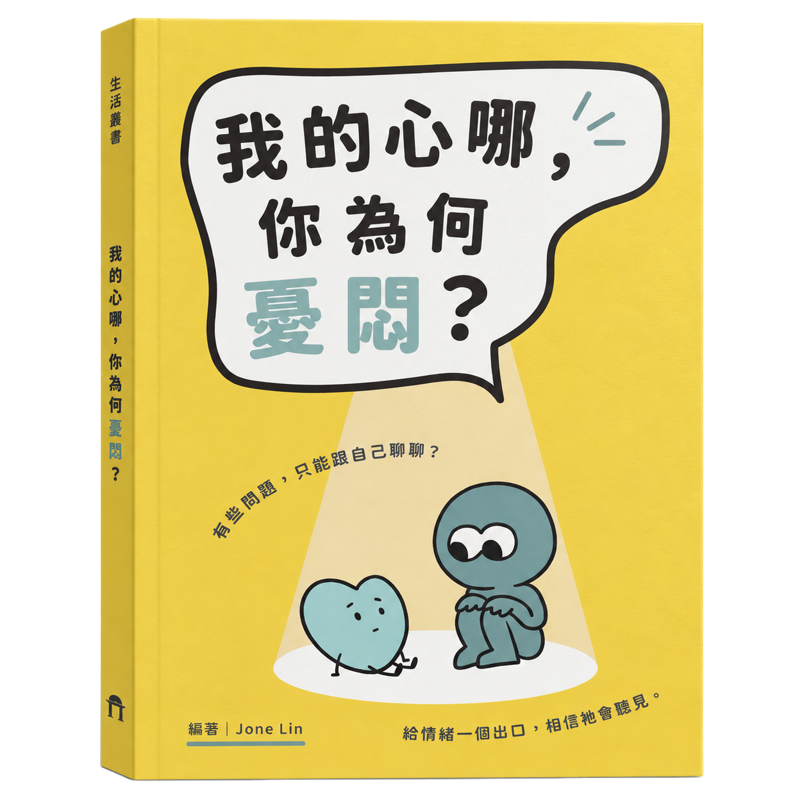

一顆一直說
「我沒事」的心
拾獲地點服事結束以後
有些心事，
只是暫時找不到主人。

可能是一句話。可能是一段日子。
也可能，是自己。
拾獲地點服事結束以後
拾獲地點禱告之前
（還是先收起來好了。）
拾獲地點聚會散場後的空椅子
拾獲地點一個很安靜的夜裡
拾獲地點想念忽然湧上來的時候
拾獲地點那則還沒送出的訊息旁
拾獲地點努力撐住的每一天
有些心事很輕，
卻讓人拿了好久。
登記還沒結束。
有些心事，還在慢慢找到名字。
比起憂鬱本身，
更困難的，往往是
開口說出自己的
困境與掙扎。
——《我的心哪，你為何憂悶？》
如果其中有一件很像你的，
不用證明它是你的。
一本書，陪心走一段路
有人寫失去，
有人寫情傷，
有人寫服事中的疲倦，
也有人從精神醫療與陪伴談起。
每一篇面對的處境不同，
卻都回到同一顆會疲倦、
會受傷，也會尋找神的心。
Jone Lin 編著 ／ 腓利門書房